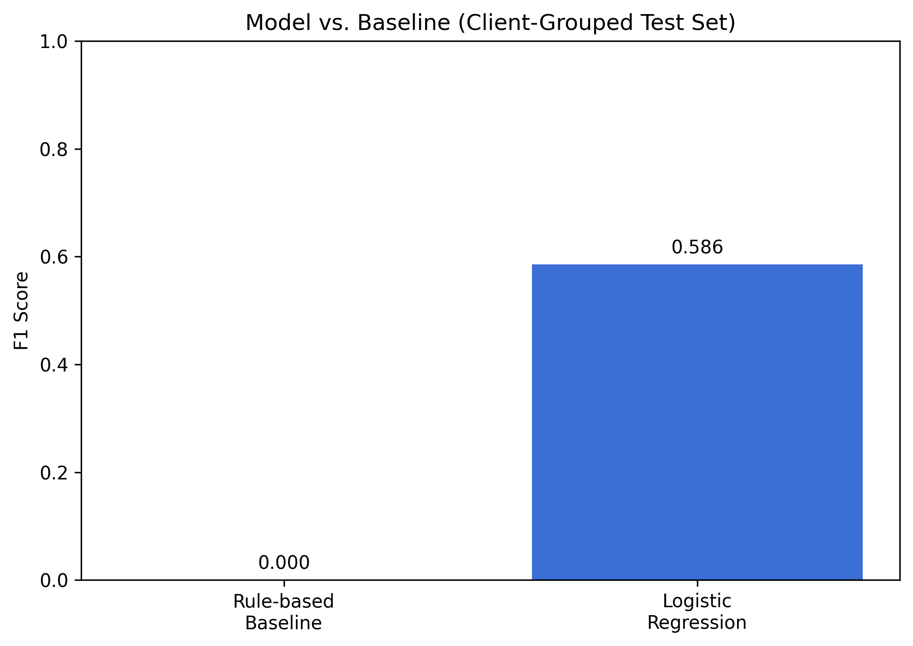
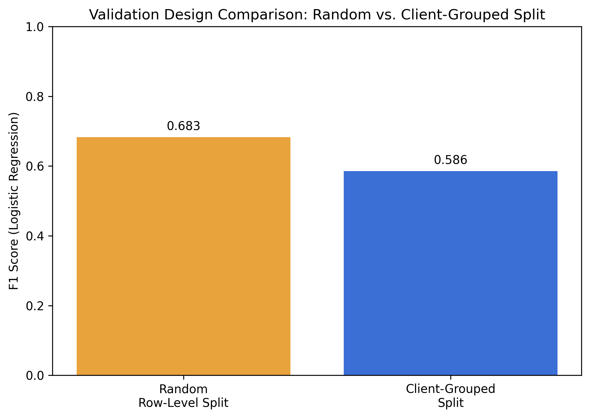
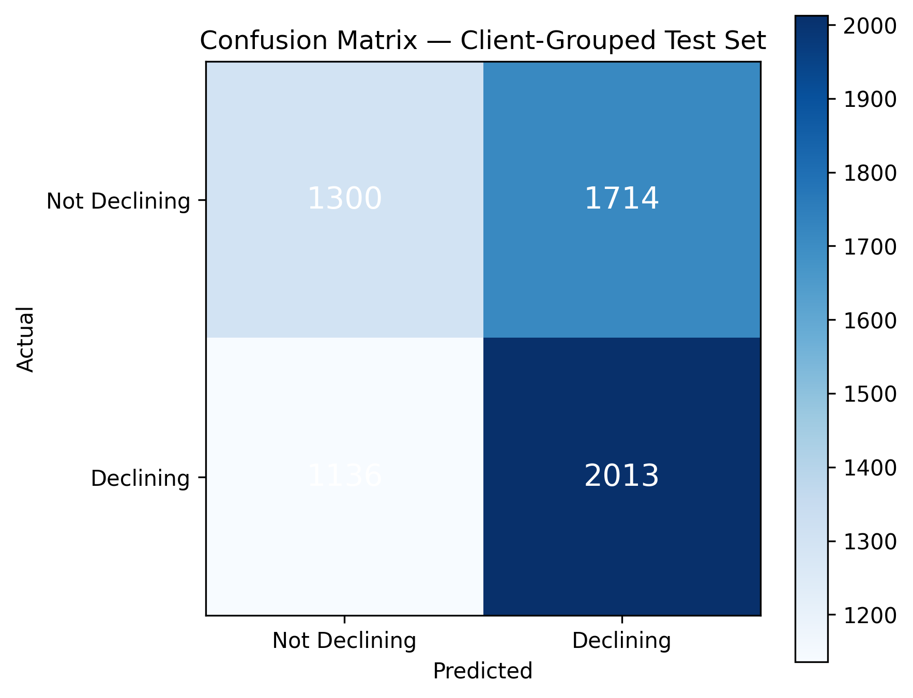
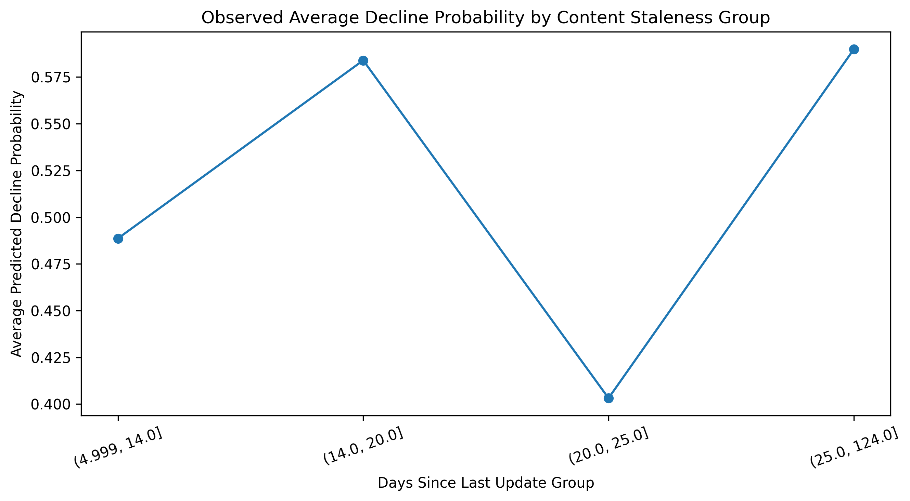
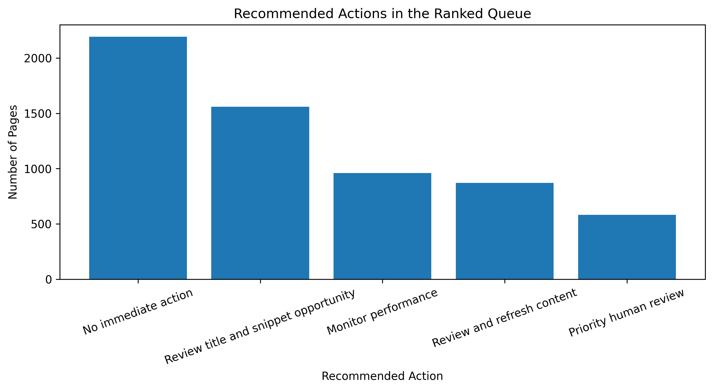

A decision-support system that uses search performance, engagement, and content-freshness signals to rank content pages for human review — not to predict or automate content changes.
Content teams manage more pages than they can review with equal priority, so this project studies whether search performance, engagement, and freshness signals can be combined into a ranked, explainable review queue. Using an anonymized FlyRank dataset of 30,000 content pages across 32 clients, a logistic regression model was trained to estimate the likelihood of a dataset-defined decline label, evaluated first with a random row-level split and then with a stricter client-grouped split to test generalization to unseen clients. The client-grouped evaluation produced a lower, more honest F1 score than the random split, confirming that random splits can overstate real-world performance when the same client appears in both training and test data. The resulting decline probabilities were combined with an operational value score and observable freshness and engagement signals into a transparent priority score, ranked queue, and set of reason codes. The system is intended strictly as human-in-the-loop decision support: it prioritizes review, it does not predict outcomes or automate content changes.
Content teams cannot manually inspect every page with equal priority. A page may deserve attention because its search performance is declining, because it receives high impressions but few clicks, because it hasn't been updated in a long time, because engagement is weak, or because several of these signals appear together. This project builds a system that turns those signals into a ranked, explainable queue for a human content team — answering what to look at first, never what to change.
The project uses the FlyRank ML Internship content-refresh dataset: 30,000 anonymized content pages spanning 32 clients, identified only by content_id and client_id. No client names, domains, URLs, or private queries appear anywhere in this project or its outputs.
Feature categories used: search performance (impressions, clicks, average position, CTR), engagement (sessions, pageviews, users, engagement rate), freshness (content age, days since last update), content characteristics (word count, content type, main intent, provider used), and search opportunity (search volume, competition, CPC).
The supervised label is a dataset-defined proxy, not an independent ground truth:
target = 1 if trend_direction == "down" else 0
The model estimates the likelihood of this dataset-defined decline label — it does not predict that a page will definitely decline, and it makes no claim about Google's ranking algorithm.
A Logistic Regression pipeline was used for interpretability: numeric features are median-imputed and standard-scaled; categorical features are most-frequent-imputed and one-hot encoded. The output is a decline_probability between 0 and 1, treated as a model score, not a certainty.

The same model and features were evaluated two ways: a random 80/20 row-level split, and a GroupShuffleSplit keyed on client_id so that no client appears in both train and test. The grouped split is the stronger test because it measures generalization to unseen clients, which is closer to how this system would actually be used.
| Split | Accuracy | Precision | Recall | F1 | ROC-AUC |
|---|---|---|---|---|---|
| Random row-level | 0.613 | 0.615 | 0.768 | 0.683 | 0.639 |
| Client-grouped | 0.538 | 0.540 | 0.639 | 0.586 | 0.546 |


Columns that directly define or reveal the target, and identifier columns, were excluded from the feature set and verified programmatically:
| Column | Leakage risk | Reason | Used as feature? |
|---|---|---|---|
| trend_direction | High | Defines the target directly | No |
| trend_pct | High | Directly related to the target definition | No |
| client_id | Medium | Identifier | No — grouping only |
| content_id | Medium | Identifier | No |
A deliberate leakage test confirms the risk is real: adding trend_pct back into the feature set raises the client-grouped F1 from 0.586 to 0.850 — an artificial jump that shows how a single label-derived column can make evaluation look far stronger than a legally available feature set actually supports. The honest, leakage-free feature set (F1 = 0.586) is the one used everywhere else in this project.
Sampled false positives tend to be pages with low impressions and low click-through rate but a longer time since last update — the model leans on staleness even when visibility is thin. Sampled false negatives include pages with meaningfully high impressions (one with over 15,000 impressions in 90 days) that were still labeled as declining, suggesting the model under-weights cases where a large but low-converting audience coincides with decline. These patterns are directional observations from the sampled errors, not a claim that any single feature causes an individual misprediction.

Decline probability alone isn't the priority signal — a page with high risk and almost no traffic matters less than one with high risk and real visibility. A transparent business value score (0.4 × clicks + 0.3 × impressions + 0.3 × sessions, each min-max normalized on the test set) is combined with decline probability into a priority score:
priority_score = 0.7 × decline_probability + 0.3 × business_value_score
The full queue — 6,163 test-set pages, ranked highest to lowest — is exported to work/outputs/ranked_action_queue.csv. The top of the queue:
| Rank | Priority | Decline P | Archetype | Action | Reason codes |
|---|---|---|---|---|---|
| 1 | 0.544 | 0.751 | high_risk_high_value | Priority human review | high_decline_riskhigh_value_pagecontent_stale |
| 2 | 0.543 | 0.765 | high_risk_high_value | Priority human review | high_decline_riskhigh_value_pagecontent_stale |
| 3 | 0.542 | 0.773 | stale_high_risk | Review and refresh content | high_decline_riskcontent_stale |
Reason codes describe observable conditions associated with the recommendation — they are not a claim about the model's internal causal reasoning.

Priority human review.
Review and investigate a possible refresh.
Review title, snippet, and SERP presentation.
Monitor; risk is currently lower.
No immediate action.
A priority score means review sooner. It never means change automatically. Before acting on any recommendation, a human should check whether the page is still strategically important, whether the trend is meaningful or normal variation, whether a technical or indexing issue is present, whether search intent has changed, and whether a change carries legal or brand risk.
This system is human-in-the-loop decision support — full stop.
As a prototype rather than a production system, monitoring is lightweight: a baseline of positive-class rate, mean/median decline probability, and key feature distributions is stored in work/outputs/monitoring_baseline.json. Investigation (not automatic retraining) should be triggered by data drift, prediction drift, measured performance degradation on new labeled data, a shift in the base decline rate, rising missingness in key features, or the system being applied to a substantially different client population.
work/notebooks/w05_model.ipynb — model training and baseline comparisonwork/notebooks/w06_validation_audit.ipynb — random vs. grouped validation, leakage audit, error analysiswork/notebooks/w07_action_playbook.ipynb — value score, priority score, archetypes, reason codes, ranked queue exportwork/outputs/ranked_action_queue.csv, validation_metrics.json, leakage_audit.json, monitoring_baseline.json